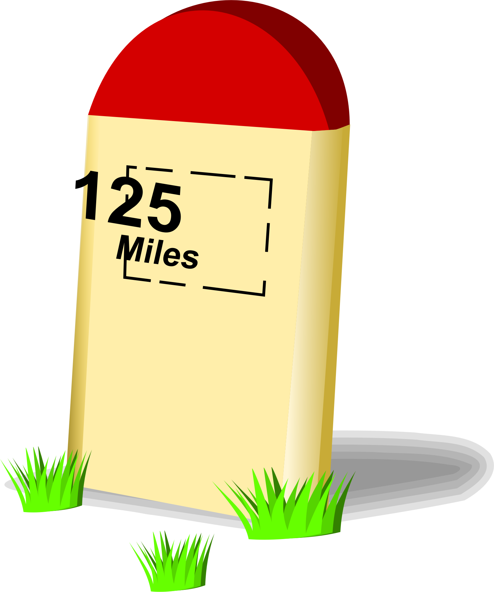

<head>
   <title>Sixty-Three Fires of Lung</title>
   <style>
      body{ background-color: rgb(0,9,12); color: #00b4ff }
      a{ color: #70b4ff; text-decoration: none }
      a:hover{ color: #f0ffff; text-decoration: overline underline }
   </style>


<body>

<div id="google_translate_element">
Page: <a href='63_Devlog_page1.html'>1</a> <a href='63_Devlog_page2.html'>2</a> <a href='63_Devlog_page3.html'>3</a> <a href='63_Devlog_page4.html'>4</a> <a href='63_Devlog_page5.html'>5</a> <a href='63_Devlog_page6.html'>6</a> <a href='63_Devlog_page7.html'>7</a> <a href='63_Devlog_page8.html'>8</a> <a href='63_Devlog_page9.html'>9</a> <a href='63_Devlog_page10.html'>10</a> <a href='63_Devlog_page11.html'>11</a> <a href='63_Devlog_page12.html'>12</a> <a href='63_Devlog_page13.html'>13</a> <a href='63_Devlog_page14.html'>14</a> <big>15</big> <a href='63_Devlog_page16.html'>16</a> <a href='63_Devlog_page17.html'>17</a> <a href='63_Devlog_page18.html'>18</a> <a href='63_Devlog_page19.html'>19</a> <a href='63_Devlog_page20.html'>20</a> <p><table width='100%'><caption>Live DevLog</caption>
<tr valign=top><td colspan=2><big>14 Jan 2018</big></td></tr>
<!-- entry #1017 --><tr valign=top><td>13:36:00</td><td align=right style='color: rgb(1,170,249); background-color: #000000'>NOTE</td><td style='color: rgb(1,170,249); background-color: rgb(1,13,21)'>the reason I do this, is because SDL would with a normal font have to generate entire pictures I never use just to find out how wide text is. This is not desirable, as this slows down the game when having to wrap the text for the textboxes. Not to mention this would even lead to more irritation as most RPG fans want the text to appear letter by letter.... Yeah... not gonna happen with the normal SDL settings, and with this font I can limit the RAM usage to the font alone and string length calculations in pixels will also require less performance of the CPU.</td></tr>
<!-- entry #1016 --><tr valign=top><td>13:28:35</td><td align=right style='color: rgb(1,178,253); background-color: #000000'>BLITZMAX</td><td style='color: rgb(1,178,253); background-color: rgb(1,12,16)'>I've set up a small tool I'll use for the scenario font</td></tr>
<!-- entry #1015 --><tr valign=top><td>00:17:35</td><td align=right style='color: rgb(1,180,254); background-color: #000000'>FAILURE</td><td style='color: rgb(1,180,254); background-color: rgb(1,11,15)'> And everything lags.... I guess I need to turn this damn thing off completely tonight....</td></tr>
<tr valign=top><td colspan=2><big>13 Jan 2018</big></td></tr>
<!-- entry #1014 --><tr valign=top><td>23:41:50</td><td align=right style='color: rgb(1,175,240); background-color: #000000'>STATUS</td><td style='color: rgb(1,175,240); background-color: rgb(1,11,12)'>Calling it a day ;)</td></tr>
<!-- entry #1013 --><tr valign=top><td>23:41:26</td><td align=right style='color: rgb(1,172,237); background-color: #000000'>CONFIG</td><td style='color: rgb(1,172,237); background-color: rgb(1,16,15)'>And a bit of reconfiguration was also needed I guess...</td></tr>
<!-- entry #1012 --><tr valign=top><td>23:41:03</td><td align=right style='color: rgb(1,179,249); background-color: #000000'>BACKUP</td><td style='color: rgb(1,179,249); background-color: rgb(1,12,17)'>In order not to get my work to waste I'll at least do some extra backups.</td></tr>
<!-- entry #1011 --><tr valign=top><td>23:40:28</td><td align=right style='color: rgb(1,175,240); background-color: #000000'>STATUS</td><td style='color: rgb(1,175,240); background-color: rgb(1,11,12)'>I'd love to get onto the BoxText routine now, as the official starting shot for this project can sound once that part is fully operative, however it's late, so it's better to call it a day</td></tr>
<!-- entry #1010 --><tr valign=top><td>23:38:25</td><td align=right style='color: rgb(1,177,253); background-color: #000000'>AUDIO</td><td style='color: rgb(1,177,253); background-color: rgb(1,13,24)'>The narrator's voice has been recorded</td></tr>
<!-- entry #1009 --><tr valign=top><td>23:15:07</td><td align=right style='color: rgb(1,170,249); background-color: #000000'>NOTE</td><td style='color: rgb(1,170,249); background-color: rgb(1,13,21)'>Since the introduction is the only part of the game where voice acting is being practised I am NOT going to make a seperate voice acting tag :P</td></tr>
<!-- entry #1008 --><tr valign=top><td>23:14:28</td><td align=right style='color: rgb(1,179,251); background-color: #000000'>TEST</td><td style='color: rgb(1,179,251); background-color: rgb(1,16,12)'>Testing my Audacity settings for a little voice acting.</td></tr>
<!-- entry #1007 --><tr valign=top><td>23:11:04</td><td align=right style='color: rgb(1,179,232); background-color: #000000'>GITHUB</td><td style='color: rgb(1,179,232); background-color: rgb(1,9,22)'>All repositories are up to date</td></tr>
<!-- entry #1006 --><tr valign=top><td>23:06:16</td><td align=right style='color: rgb(1,170,247); background-color: #000000'>UPDATED</td><td style='color: rgb(1,170,247); background-color: rgb(1,10,13)'>Several license headers</td></tr>
<!-- entry #1005 --><tr valign=top><td>23:00:55</td><td align=right style='color: rgb(1,175,240); background-color: #000000'>STATUS</td><td style='color: rgb(1,175,240); background-color: rgb(1,11,12)'>As far as I can judge everything works now... However I must keep in mind that bugs can still exist as everything works "under da hood" or so to speak....</td></tr>
<!-- entry #1004 --><tr valign=top><td>22:56:06</td><td align=right style='color: rgb(1,179,236); background-color: #000000'>FIXED</td><td style='color: rgb(1,179,236); background-color: rgb(1,12,18)'>Illegal function call</td></tr>
<!-- entry #1003 --><tr valign=top><td>22:53:48</td><td align=right style='color: rgb(1,179,236); background-color: #000000'>FIXED</td><td style='color: rgb(1,179,236); background-color: rgb(1,12,18)'>But at least the denial of the file's existence has been fixed :P</td></tr>
<!-- entry #1002 --><tr valign=top><td>22:53:34</td><td align=right style='color: rgb(1,179,236); background-color: #000000'>FIXED</td><td style='color: rgb(1,179,236); background-color: rgb(1,12,18)'>A bug in the Loader itself</td></tr>
<!-- entry #1001 --><tr valign=top><td>22:49:39</td><td align=right style='color: rgb(1,177,240); background-color: #000000'>OFFTOPIC</td><td style='color: rgb(1,177,240); background-color: rgb(1,11,25)'>And the project has hardly begun and I am not over the thousand entries in this devlog.<br>Either I work too hard or I got too much to do to get this to work or... I talk too much...</td></tr>
<!-- entry #1000 --><tr valign=top><td>22:48:49</td><td align=right style='color: rgb(1,171,250); background-color: #000000'>STUPIDITY</td><td style='color: rgb(1,171,250); background-color: rgb(1,17,19)'>Indeed it did and I feel pretty silly finding what it was.... (A forgotten slash).</td></tr>
<!-- entry #999 --><tr valign=top><td>22:45:37</td><td align=right style='color: rgb(1,176,240); background-color: #000000'>DEBUG</td><td style='color: rgb(1,176,240); background-color: rgb(1,9,22)'>This extra debug log line must tell me that...</td></tr>
<!-- entry #998 --><tr valign=top><td>22:45:20</td><td align=right style='color: rgb(1,177,246); background-color: #000000'>BUG</td><td style='color: rgb(1,177,246); background-color: rgb(1,14,19)'>It cannot find the file I want it to find.... Why?</td></tr>
<!-- entry #997 --><tr valign=top><td>22:22:38</td><td align=right style='color: rgb(1,170,249); background-color: #000000'>NOTE</td><td style='color: rgb(1,170,249); background-color: rgb(1,13,21)'>Testing is hard... All I can test is if there are no errors are generated and if everything is loaded on the requested moment (I love my debug logs)... ;)</td></tr>
<!-- entry #996 --><tr valign=top><td>22:19:17</td><td align=right style='color: rgb(1,172,247); background-color: #000000'>DONE</td><td style='color: rgb(1,172,247); background-color: rgb(1,13,15)'>The map loader of the game should now also load the "MapText" that should be attached to every map automatically, but it takes the possibility into account that none exists.</td></tr>
<!-- entry #995 --><tr valign=top><td>21:19:42</td><td align=right style='color: rgb(1,176,240); background-color: #000000'>DEBUG</td><td style='color: rgb(1,176,240); background-color: rgb(1,9,22)'>Added a variable readout debug routine</td></tr>
<!-- entry #994 --><tr valign=top><td>21:05:17</td><td align=right style='color: rgb(1,175,240); background-color: #000000'>STATUS</td><td style='color: rgb(1,175,240); background-color: rgb(1,11,12)'>Analysis complete.... Yup this shouldn't be too hard to do.</td></tr>
<!-- entry #993 --><tr valign=top><td>20:52:10</td><td align=right style='color: rgb(1,170,235); background-color: #000000'>TODO</td><td style='color: rgb(1,170,235); background-color: rgb(1,12,16)'>Time to put in the scenario loader. No need to re-invent the wheel here. The one I used in The Fairy Tael REVAMPED will certainly fill the bill, however I must keep the possibility in mind that it's dependent on API files LAURA II provided, and its calls to those APIs  will now (of course) cause a "nil value" error. <p>I do not expect however that this will really lead to serious trouble,  as the replacement APIs are either sufficient enough to just change a few lines of code, or even to rewrite completely in Lua... At least I don't expect that, since this routine was already written in Lua as much as possible.</td></tr>
<!-- entry #992 --><tr valign=top><td>20:49:02</td><td align=right style='color: rgb(1,172,247); background-color: #000000'>DONE</td><td style='color: rgb(1,172,247); background-color: rgb(1,13,15)'>Well THAT was a good meal ;)</td></tr>
<!-- entry #991 --><tr valign=top><td>19:47:12</td><td align=right style='color: rgb(1,179,232); background-color: #000000'>GITHUB</td><td style='color: rgb(1,179,232); background-color: rgb(1,9,22)'>Repository updated</td></tr>
<!-- entry #990 --><tr valign=top><td>19:46:12</td><td align=right style='color: rgb(1,179,249); background-color: #000000'>BACKUP</td><td style='color: rgb(1,179,249); background-color: rgb(1,12,17)'>Before that break I'll first run the backup</td></tr>
<!-- entry #989 --><tr valign=top><td>19:45:02</td><td align=right style='color: rgb(1,175,240); background-color: #000000'>STATUS</td><td style='color: rgb(1,175,240); background-color: rgb(1,11,12)'>Next step will (I suppose) be to put the scenario loader in place, and the BoxText routine can use this to make Ryanna talk... Well in text that is, as she won't have a voice actor.</td></tr>
<!-- entry #988 --><tr valign=top><td>19:43:42</td><td align=right style='color: rgb(1,175,240); background-color: #000000'>STATUS</td><td style='color: rgb(1,175,240); background-color: rgb(1,11,12)'>And this looks like a fine moment to take a break in order to stuff my belly with fuel to carry on and I also need to fill my dishwasher I guess... :-/</td></tr>
<!-- entry #987 --><tr valign=top><td>19:21:11</td><td align=right style='color: rgb(1,179,236); background-color: #000000'>FIXED</td><td style='color: rgb(1,179,236); background-color: rgb(1,12,18)'>Zone action works now</td></tr>
<!-- entry #986 --><tr valign=top><td>18:40:21</td><td align=right style='color: rgb(1,179,236); background-color: #000000'>FIXED</td><td style='color: rgb(1,179,236); background-color: rgb(1,12,18)'>Ah... I actually broke something when removing debug functions</td></tr>
<!-- entry #985 --><tr valign=top><td>17:56:14</td><td align=right style='color: rgb(1,179,236); background-color: #000000'>FIXED</td><td style='color: rgb(1,179,236); background-color: rgb(1,12,18)'>Well if it happens again, no operation</td></tr>
<!-- entry #984 --><tr valign=top><td>17:56:05</td><td align=right style='color: rgb(1,176,240); background-color: #000000'>DEBUG</td><td style='color: rgb(1,176,240); background-color: rgb(1,9,22)'>result is no nodes....</td></tr>
<!-- entry #983 --><tr valign=top><td>17:52:58</td><td align=right style='color: rgb(1,176,240); background-color: #000000'>DEBUG</td><td style='color: rgb(1,176,240); background-color: rgb(1,9,22)'>Now this debug routine will have to tell me what is wrong here</td></tr>
<!-- entry #982 --><tr valign=top><td>17:51:16</td><td align=right style='color: rgb(1,175,245); background-color: #000000'>COCKROACH</td><td style='color: rgb(1,175,245); background-color: rgb(1,14,13)'>And it happens again....</td></tr>
<!-- entry #981 --><tr valign=top><td>17:46:07</td><td align=right style='color: rgb(1,175,245); background-color: #000000'>COCKROACH</td><td style='color: rgb(1,175,245); background-color: rgb(1,14,13)'>AND WHAT THE FUCK IS THIS???<pre>Error: [string "Libs/Lib_kthura.rel/Draw.lua"]:142: attempt to index local 'cnode' (a nil value)<br>stack traceback:<br>	[string "Libs/Lib_kthura.rel/Draw.lua"]:142: in function 'draw'<br>	[string "Libs/Lib_kthura.rel/Draw.lua"]:255: in function 'draw'<br>	[string "Libs/Lib_kthura.rel/Draw.lua"]:287: in function 'drawmap'<br>	[string "Script/Flows/field.rel/field.lua"]:158: in function 'odraw'<br>	[string "Libs/killcallback.rel/kcb.lua"]:69: in function 'draw'<br>	[string "boot.lua"]:468: in function <[string "boot.lua"]:436><br>	[C]: in function 'xpcall'<br></pre></td></tr>
<!-- entry #980 --><tr valign=top><td>17:43:16</td><td align=right style='color: rgb(1,179,236); background-color: #000000'>FIXED</td><td style='color: rgb(1,179,236); background-color: rgb(1,12,18)'>Illegal table-readout</td></tr>
<!-- entry #979 --><tr valign=top><td>17:41:35</td><td align=right style='color: rgb(1,179,236); background-color: #000000'>FIXED</td><td style='color: rgb(1,179,236); background-color: rgb(1,12,18)'>Illegal function call</td></tr>
<!-- entry #978 --><tr valign=top><td>17:40:03</td><td align=right style='color: rgb(1,179,236); background-color: #000000'>FIXED</td><td style='color: rgb(1,179,236); background-color: rgb(1,12,18)'>And the clearup must take place PRIOR to loading the mapscript.... Doh!</td></tr>
<!-- entry #977 --><tr valign=top><td>17:39:38</td><td align=right style='color: rgb(1,179,236); background-color: #000000'>FIXED</td><td style='color: rgb(1,179,236); background-color: rgb(1,12,18)'>Unwanted layer names in the dump</td></tr>
<!-- entry #976 --><tr valign=top><td>17:36:32</td><td align=right style='color: rgb(1,176,240); background-color: #000000'>DEBUG</td><td style='color: rgb(1,176,240); background-color: rgb(1,9,22)'>This dumpout shows at least that the data collected by ZA_Enter and ZA_Leave is COMPLETELY BOGUS!</td></tr>
<!-- entry #975 --><tr valign=top><td>17:35:53</td><td align=right style='color: rgb(1,173,243); background-color: #000000'>DUMP</td><td style='color: rgb(255,255,0); background-color: rgb(18,0,25)'><pre style=''>Well what I was trying to do was this</pre></td></tr>
<!-- entry #974 --><tr valign=top><td>17:31:58</td><td align=right style='color: rgb(1,180,254); background-color: #000000'>FAILURE</td><td style='color: rgb(1,180,254); background-color: rgb(1,11,15)'>Web-Browsers.... The most terrible piece of software known to man!</td></tr>
<!-- entry #973 --><tr valign=top><td>17:21:35</td><td align=right style='color: rgb(1,176,240); background-color: #000000'>DEBUG</td><td style='color: rgb(1,176,240); background-color: rgb(1,9,22)'>Let's first see how the config is....</td></tr>
<!-- entry #972 --><tr valign=top><td>17:21:26</td><td align=right style='color: rgb(1,177,246); background-color: #000000'>BUG</td><td style='color: rgb(1,177,246); background-color: rgb(1,14,19)'>Zone actions ignored</td></tr>
<!-- entry #971 --><tr valign=top><td>17:20:29</td><td align=right style='color: rgb(1,179,236); background-color: #000000'>FIXED</td><td style='color: rgb(1,179,236); background-color: rgb(1,12,18)'>Wrong escape code... Apparently, the parse checker in eclipse doesn't see that...</td></tr>
<!-- entry #970 --><tr valign=top><td>17:07:10</td><td align=right style='color: rgb(1,177,246); background-color: #000000'>BUG</td><td style='color: rgb(1,177,246); background-color: rgb(1,14,19)'>For some reason, the zone action file doesn't compile... The compiler however refuses to tell me why</td></tr>
<!-- entry #969 --><tr valign=top><td>16:54:13</td><td align=right style='color: rgb(1,179,251); background-color: #000000'>TEST</td><td style='color: rgb(1,179,251); background-color: rgb(1,16,12)'>Take ONE -- Does it work?</td></tr>
<!-- entry #968 --><tr valign=top><td>16:53:52</td><td align=right style='color: rgb(1,172,247); background-color: #000000'>DONE</td><td style='color: rgb(1,172,247); background-color: rgb(1,13,15)'>Linked that to the main field routine</td></tr>
<!-- entry #967 --><tr valign=top><td>16:52:39</td><td align=right style='color: rgb(1,172,247); background-color: #000000'>DONE</td><td style='color: rgb(1,172,247); background-color: rgb(1,13,15)'>The ZA_Checker has now been written. Now the question is of course... Does it work, or not.</td></tr>
<!-- entry #966 --><tr valign=top><td>16:22:27</td><td align=right style='color: rgb(1,176,242); background-color: #000000'>ENHANCEMENT</td><td style='color: rgb(1,176,242); background-color: rgb(1,14,15)'>Parameter support in Zone Action... Only one parameter is taken. If more are needed... use tables.</td></tr>
<!-- entry #965 --><tr valign=top><td>16:16:45</td><td align=right style='color: rgb(1,180,245); background-color: #000000'>SCRIPT</td><td style='color: rgb(1,180,245); background-color: rgb(1,12,15)'> Scripted the routine which can check whether or not an actor is inside a zone.<br>This will be checked for zone actions in order to find out if Ryanna (or whoever else in in the lead at the present time)</td></tr>
<!-- entry #964 --><tr valign=top><td>15:46:15</td><td align=right style='color: rgb(1,170,247); background-color: #000000'>UPDATED</td><td style='color: rgb(1,170,247); background-color: rgb(1,10,13)'><a href='http://github.com/PhantasarProductions/63fires/issues/4'>#4</a></td></tr>
<!-- entry #963 --><tr valign=top><td>15:21:34</td><td align=right style='color: rgb(1,180,245); background-color: #000000'>SCRIPT</td><td style='color: rgb(1,180,245); background-color: rgb(1,12,15)'>I've set up a little map script that I can use for test purposes.</td></tr>
<!-- entry #962 --><tr valign=top><td>14:53:17</td><td align=right style='color: rgb(1,175,240); background-color: #000000'>STATUS</td><td style='color: rgb(1,175,240); background-color: rgb(1,11,12)'>Well at least that kills this cockroach.... for now.... :-/</td></tr>
<!-- entry #961 --><tr valign=top><td>14:31:25</td><td align=right style='color: rgb(1,172,247); background-color: #000000'>DONE</td><td style='color: rgb(1,172,247); background-color: rgb(1,13,15)'>I REFUSE to deem this 'FIXED' as officially this code is still as BUGGED AS HELL, but at least Ryanna will now always reach her destination. The way I did this is not something to be proud of, and I am definitely not proud of it, but at least things work now, and only nitwits would ever be the wiser, and those are the kind of people you should ignore anyway!</td></tr>
<!-- entry #960 --><tr valign=top><td>14:24:12</td><td align=right style='color: rgb(1,179,251); background-color: #000000'>TEST</td><td style='color: rgb(1,179,251); background-color: rgb(1,16,12)'>Take SEVEN!</td></tr>
<!-- entry #959 --><tr valign=top><td>14:22:31</td><td align=right style='color: rgb(1,175,245); background-color: #000000'>COCKROACH</td><td style='color: rgb(1,175,245); background-color: rgb(1,14,13)'>Blocks are still in my way....</td></tr>
<!-- entry #958 --><tr valign=top><td>14:14:44</td><td align=right style='color: rgb(1,179,251); background-color: #000000'>TEST</td><td style='color: rgb(1,179,251); background-color: rgb(1,16,12)'>Take SIX</td></tr>
<!-- entry #957 --><tr valign=top><td>14:12:31</td><td align=right style='color: rgb(1,173,243); background-color: #000000'>DUMP</td><td style='color: rgb(255,255,0); background-color: rgb(18,0,25)'><pre style=''>Adding jumper node: (20,12)<br>Adding jumper node: (19,12)<br>Adding vertical correction node: (18,13)<br>Adding jumper node: (18,12)<br>Adding vertical correction node: (17,14)<br>Adding jumper node: (17,13)<br>Adding vertical correction node: (16,15)<br>Adding jumper node: (16,14)<br>Adding vertical correction node: (15,16)<br>Adding jumper node: (15,15)<br>Adding vertical correction node: (14,17)<br>Adding jumper node: (14,16)<br>Adding vertical correction node: (13,18)<br>Adding jumper node: (13,17)<br>Adding vertical correction node: (12,19)<br>Adding jumper node: (12,18)<br>Adding jumper node: (11,19)</td></tr>
<!-- entry #956 --><tr valign=top><td>14:11:28</td><td align=right style='color: rgb(1,179,251); background-color: #000000'>TEST</td><td style='color: rgb(1,179,251); background-color: rgb(1,16,12)'>And that brings us take FIVE</td></tr>
<!-- entry #955 --><tr valign=top><td>14:11:10</td><td align=right style='color: rgb(1,171,250); background-color: #000000'>STUPIDITY</td><td style='color: rgb(1,171,250); background-color: rgb(1,17,19)'>Ingore that last dump.... Its outcome is NOT correct</td></tr>
<!-- entry #954 --><tr valign=top><td>14:06:53</td><td align=right style='color: rgb(1,173,243); background-color: #000000'>DUMP</td><td style='color: rgb(255,255,0); background-color: rgb(18,0,25)'><pre style=''>Adding jumper node: (20,12)<br>Adding vertical correction node: (19,12)<br>Adding jumper node: (19,12)<br>Adding vertical correction node: (18,13)<br>Adding jumper node: (18,13)<br>Adding vertical correction node: (17,14)<br>Adding jumper node: (17,14)<br>Adding vertical correction node: (16,15)<br>Adding jumper node: (16,15)<br>Adding vertical correction node: (15,16)<br>Adding jumper node: (15,16)<br>Adding vertical correction node: (14,17)<br>Adding jumper node: (14,17)<br>Adding vertical correction node: (13,18)<br>Adding jumper node: (13,18)<br>Adding jumper node: (12,19)<br></pre> Now this DOES shine a light on things... I think...</td></tr>
<!-- entry #953 --><tr valign=top><td>14:05:24</td><td align=right style='color: rgb(1,179,251); background-color: #000000'>TEST</td><td style='color: rgb(1,179,251); background-color: rgb(1,16,12)'>So that is for take FOUR. A take ensured to fail, but hopefully with some ANSWERS this time.</td></tr>
<!-- entry #952 --><tr valign=top><td>14:05:04</td><td align=right style='color: rgb(1,176,240); background-color: #000000'>DEBUG</td><td style='color: rgb(1,176,240); background-color: rgb(1,9,22)'>Hopefully this debug line explains a few things</td></tr>
<!-- entry #951 --><tr valign=top><td>14:04:52</td><td align=right style='color: rgb(1,175,245); background-color: #000000'>COCKROACH</td><td style='color: rgb(1,175,245); background-color: rgb(1,14,13)'>Why does it come up with THIS result?</td></tr>
<!-- entry #950 --><tr valign=top><td>14:00:35</td><td align=right style='color: rgb(1,179,251); background-color: #000000'>TEST</td><td style='color: rgb(1,179,251); background-color: rgb(1,16,12)'>Take THREE!</td></tr>
<!-- entry #949 --><tr valign=top><td>14:00:30</td><td align=right style='color: rgb(1,175,245); background-color: #000000'>COCKROACH</td><td style='color: rgb(1,175,245); background-color: rgb(1,14,13)'>I'm beginning to HATE this routine</td></tr>
<!-- entry #948 --><tr valign=top><td>13:59:32</td><td align=right style='color: rgb(1,179,251); background-color: #000000'>TEST</td><td style='color: rgb(1,179,251); background-color: rgb(1,16,12)'>TAKE TWO!</td></tr>
<!-- entry #947 --><tr valign=top><td>13:59:26</td><td align=right style='color: rgb(1,180,254); background-color: #000000'>FAILURE</td><td style='color: rgb(1,180,254); background-color: rgb(1,11,15)'>EPIC FAIL!</td></tr>
<!-- entry #946 --><tr valign=top><td>13:58:31</td><td align=right style='color: rgb(1,179,251); background-color: #000000'>TEST</td><td style='color: rgb(1,179,251); background-color: rgb(1,16,12)'>And now for the "moment supr&egrave;me</td></tr>
<!-- entry #945 --><tr valign=top><td>13:51:44</td><td align=right style='color: rgb(1,172,247); background-color: #000000'>DONE</td><td style='color: rgb(1,172,247); background-color: rgb(1,13,15)'>I've tried to tie this together and let's see now if this does something</td></tr>
<!-- entry #944 --><tr valign=top><td>13:18:26</td><td align=right style='color: rgb(1,170,239); background-color: #000000'>KTHURA</td><td style='color: rgb(1,170,239); background-color: rgb(1,12,19)'>Range Block</td></tr>
<!-- entry #943 --><tr valign=top><td>13:06:19</td><td align=right style='color: rgb(1,179,236); background-color: #000000'>FIXED</td><td style='color: rgb(1,179,236); background-color: rgb(1,12,18)'>False nodes</td></tr>
<!-- entry #942 --><tr valign=top><td>13:04:03</td><td align=right style='color: rgb(1,176,240); background-color: #000000'>DEBUG</td><td style='color: rgb(1,176,240); background-color: rgb(1,9,22)'>Let's add this debug line.<br>"Eliminate all the impossible and whatever remains, however improbably must be the truth".<br>Well this error is the impossible, but it happens, so what is the truth that remains?</td></tr>
<!-- entry #941 --><tr valign=top><td>12:56:36</td><td align=right style='color: rgb(1,170,239); background-color: #000000'>KTHURA</td><td style='color: rgb(1,170,239); background-color: rgb(1,12,19)'>I've tried to set up a routine that 'adds an extra node' when Ryanna tries to go into blocked terrain blocking her own path.</td></tr>
<!-- entry #940 --><tr valign=top><td>12:46:19</td><td align=right style='color: rgb(1,180,245); background-color: #000000'>SCRIPT</td><td style='color: rgb(1,180,245); background-color: rgb(1,12,15)'>ZA_Enter and ZA_Leave now work, that is, they are only configuring functions so the data they should generate should now be generated. As the data is not yet being checked this will not yet cause any visible effects</td></tr>
<!-- entry #939 --><tr valign=top><td>12:42:15</td><td align=right style='color: rgb(1,173,230); background-color: #000000'>RYANNA</td><td style='color: rgb(1,173,230); background-color: rgb(1,17,14)'>ClearTable()</td></tr>
<!-- entry #938 --><tr valign=top><td>00:16:47</td><td align=right style='color: rgb(1,175,240); background-color: #000000'>STATUS</td><td style='color: rgb(1,175,240); background-color: rgb(1,11,12)'>Well time for me to call it a day</td></tr>
<!-- entry #937 --><tr valign=top><td>00:08:17</td><td align=right style='color: rgb(1,170,235); background-color: #000000'>TODO</td><td style='color: rgb(1,170,235); background-color: rgb(1,12,16)'><a href='http://github.com/TrickyGameTools/Ryanna/issues/19'>TrickyGameTools/Ryanna#19</a> Should not wait for too long, but as I am tired of coding on stuff that has not content game-wise I'll leave it be for now.</td></tr>
<!-- entry #936 --><tr valign=top><td>00:06:29</td><td align=right style='color: rgb(1,172,247); background-color: #000000'>CONFIRMED</td><td style='color: rgb(1,172,247); background-color: rgb(1,18,13)'>And normal JCR based builds are not affected</td></tr>
<tr valign=top><td colspan=2><big>12 Jan 2018</big></td></tr>
<!-- entry #935 --><tr valign=top><td>23:57:59</td><td align=right style='color: rgb(1,180,236); background-color: #000000'>CLOSED</td><td style='color: rgb(1,180,236); background-color: rgb(1,16,23)'><a href='http://github.com/TrickyGameTools/Ryanna/issues/4'>TrickyGameTools/Ryanna#4</a></td></tr>
<!-- entry #934 --><tr valign=top><td>23:57:54</td><td align=right style='color: rgb(1,180,236); background-color: #000000'>CLOSED</td><td style='color: rgb(1,180,236); background-color: rgb(1,16,23)'><a href='http://github.com/TrickyGameTools/Ryanna/issues/16'>TrickyGameTools/Ryanna#16</a></td></tr>
<!-- entry #933 --><tr valign=top><td>23:55:33</td><td align=right style='color: rgb(1,177,240); background-color: #000000'>OFFTOPIC</td><td style='color: rgb(1,177,240); background-color: rgb(1,11,25)'>And I say it again <p> Debugging is twice as hard as writing the code in the first place. Therefore, if you write the code as cleverly as possible, you are, by definition, not smart enough to debug it.</td></tr>
<!-- entry #932 --><tr valign=top><td>23:55:06</td><td align=right style='color: rgb(1,172,247); background-color: #000000'>CONFIRMED</td><td style='color: rgb(1,172,247); background-color: rgb(1,18,13)'>Debugging is twice as hard as writing the code in the first place. Therefore, if you write the code as cleverly as possible, you are, by definition, not smart enough to debug it.<br><br>-- Brian Kernighan</td></tr>
<!-- entry #931 --><tr valign=top><td>23:53:57</td><td align=right style='color: rgb(1,177,237); background-color: #000000'>CLEANUP</td><td style='color: rgb(1,177,237); background-color: rgb(1,16,19)'>Unneeded an annoying debug line removed</td></tr>
<!-- entry #930 --><tr valign=top><td>23:53:20</td><td align=right style='color: rgb(1,179,236); background-color: #000000'>FIXED</td><td style='color: rgb(1,179,236); background-color: rgb(1,12,18)'>IT WORKS!!! AT LAST!!!! PARTY TIME!!!!!</td></tr>
<!-- entry #929 --><tr valign=top><td>23:52:12</td><td align=right style='color: rgb(1,175,245); background-color: #000000'>COCKROACH</td><td style='color: rgb(1,175,245); background-color: rgb(1,14,13)'>This is gonna be a LOOOONG project!</td></tr>
<!-- entry #928 --><tr valign=top><td>23:49:47</td><td align=right style='color: rgb(1,171,250); background-color: #000000'>STUPIDITY</td><td style='color: rgb(1,171,250); background-color: rgb(1,17,19)'>Wrong approach for this, Jeroen.... wrong approach....</td></tr>
<!-- entry #927 --><tr valign=top><td>23:41:28</td><td align=right style='color: rgb(1,175,245); background-color: #000000'>COCKROACH</td><td style='color: rgb(1,175,245); background-color: rgb(1,14,13)'>Still the game keeps insisting the alias does not exist (which should not be possible in any way).</td></tr>
<!-- entry #926 --><tr valign=top><td>23:38:34</td><td align=right style='color: rgb(1,179,236); background-color: #000000'>FIXED</td><td style='color: rgb(1,179,236); background-color: rgb(1,12,18)'>Enter issue alias file forming</td></tr>
<!-- entry #925 --><tr valign=top><td>23:33:44</td><td align=right style='color: rgb(1,179,236); background-color: #000000'>FIXED</td><td style='color: rgb(1,179,236); background-color: rgb(1,12,18)'>MySplit apparent does only support singler character splitups</td></tr>
<!-- entry #924 --><tr valign=top><td>23:16:53</td><td align=right style='color: rgb(1,179,236); background-color: #000000'>FIXED</td><td style='color: rgb(1,179,236); background-color: rgb(1,12,18)'>Dir error</td></tr>
<!-- entry #923 --><tr valign=top><td>23:16:47</td><td align=right style='color: rgb(1,173,243); background-color: #000000'>GO</td><td style='color: rgb(1,173,243); background-color: rgb(1,15,21)'>Code written for this feature</td></tr>
<!-- entry #922 --><tr valign=top><td>23:06:15</td><td align=right style='color: rgb(1,170,249); background-color: #000000'>NOTE</td><td style='color: rgb(1,170,249); background-color: rgb(1,13,21)'>With the adapted Lua script, we're not there yet. Now I need to go to Go.</td></tr>
<!-- entry #921 --><tr valign=top><td>23:05:47</td><td align=right style='color: rgb(1,173,230); background-color: #000000'>RYANNA</td><td style='color: rgb(1,173,230); background-color: rgb(1,17,14)'>Script has been written to make aliasing possible in both test builds and pure-zip builds.</td></tr>
<!-- entry #920 --><tr valign=top><td>22:27:16</td><td align=right style='color: rgb(1,180,245); background-color: #000000'>SCRIPT</td><td style='color: rgb(1,180,245); background-color: rgb(1,12,15)'>Skeleton MapScript</td></tr>
<!-- entry #919 --><tr valign=top><td>22:26:26</td><td align=right style='color: rgb(1,172,247); background-color: #000000'>DONE</td><td style='color: rgb(1,172,247); background-color: rgb(1,13,15)'>Script loader</td></tr>
<!-- entry #918 --><tr valign=top><td>21:58:37</td><td align=right style='color: rgb(1,172,247); background-color: #000000'>DONE</td><td style='color: rgb(1,172,247); background-color: rgb(1,13,15)'>Auto-ZA-Chain for 'Next' and 'Prev' zones... that worked so well in the last two games, that I had to bring that one back ;)</td></tr>
<!-- entry #917 --><tr valign=top><td>21:49:10</td><td align=right style='color: rgb(1,180,245); background-color: #000000'>SCRIPT</td><td style='color: rgb(1,180,245); background-color: rgb(1,12,15)'>Skeleton code for Next and Previous</td></tr>
<!-- entry #916 --><tr valign=top><td>21:47:44</td><td align=right style='color: rgb(1,179,251); background-color: #000000'>SITE</td><td style='color: rgb(1,179,251); background-color: #040404'>And in this Devlog, Shirley will appear every once in awhile, just like Ryanna and Nino were doing all along ;)</td></tr>
<!-- entry #915 --><tr valign=top><td>21:43:16</td><td align=right style='color: rgb(1,172,247); background-color: #000000'>DONE</td><td style='color: rgb(1,172,247); background-color: rgb(1,13,15)'> Well that was a good break</td></tr>
<!-- entry #914 --><tr valign=top><td>20:32:36</td><td align=right style='color: rgb(1,170,235); background-color: #000000'>TODO</td><td style='color: rgb(1,170,235); background-color: rgb(1,12,16)'>Watch Wie is de Mol? :-P</td></tr>
<!-- entry #913 --><tr valign=top><td>20:32:26</td><td align=right style='color: rgb(1,170,235); background-color: #000000'>TODO</td><td style='color: rgb(1,170,235); background-color: rgb(1,12,16)'>Go to uitzending gemist</td></tr>
<!-- entry #912 --><tr valign=top><td>20:32:16</td><td align=right style='color: rgb(1,170,235); background-color: #000000'>TODO</td><td style='color: rgb(1,170,235); background-color: rgb(1,12,16)'>Make some coffee</td></tr>
<!-- entry #911 --><tr valign=top><td>20:31:25</td><td align=right style='color: rgb(1,170,249); background-color: #000000'>NOTE</td><td style='color: rgb(1,170,249); background-color: rgb(1,13,21)'>I detect the need in myself to take a break..... Not a surprise, is it?</td></tr>
<!-- entry #910 --><tr valign=top><td>20:30:42</td><td align=right style='color: rgb(1,180,245); background-color: #000000'>SCRIPT</td><td style='color: rgb(1,180,245); background-color: rgb(1,12,15)'>Skeleton script set up for Zone Action</td></tr>
<!-- entry #909 --><tr valign=top><td>20:23:50</td><td align=right style='color: rgb(1,172,247); background-color: #000000'>CONFIRMED</td><td style='color: rgb(1,172,247); background-color: rgb(1,18,13)'>THAT WORKS :)</td></tr>
<!-- entry #908 --><tr valign=top><td>20:19:51</td><td align=right style='color: rgb(1,180,245); background-color: #000000'>SCRIPT</td><td style='color: rgb(1,180,245); background-color: rgb(1,12,15)'>The maploader SHOULD detect whether or not music is attached to the map and if so, load it UNLESS an OTHER feature exists to load it on an other way.</td></tr>
<!-- entry #907 --><tr valign=top><td>20:19:04</td><td align=right style='color: rgb(1,179,248); background-color: #000000'>MAP</td><td style='color: rgb(1,179,248); background-color: rgb(1,13,20)'>Attached Music to the graveyard</td></tr>
<!-- entry #906 --><tr valign=top><td>20:10:01</td><td align=right style='color: rgb(1,179,249); background-color: #000000'>BACKUP</td><td style='color: rgb(1,179,249); background-color: rgb(1,12,17)'>And because of that a new Backup to cover this all up <i>is</i> in order.</td></tr>
<!-- entry #905 --><tr valign=top><td>20:07:33</td><td align=right style='color: rgb(1,174,245); background-color: #000000'>MILESTONE</td><td style='color: rgb(1,174,245); background-color: rgb(1,14,12)'>This brings us to the points that I can actually begin with adding some more functionality to the game, but setting up stuff like ZA_Enter, and that's an important feature, as that feature is basically the glue between the walking in the field in general and story events. ZA stands for 'Zone Action'. That should be interpreted as when you enter this zone, do this....<br>In both Star Story and TFT REVAMPED I used to use a file that was automatically included to the MapScript for that. Since L&Ouml;VE which does not have this multi-VM approach LAURA II had (and that's why I hate it that the Bubble project had failed, although I am thinking to transfer Maan to it,as the GUI interface I have for Go appears a lot more stable), I think it will now be more efficient to put the ZA system in the field library. Of course I also need to add the BoxText routine and stuff like that now, so there is really a crapload of stuff to do before the real game begins, but this <i>is</i> one of the most important milestones for now.<br>The game now official *has* playable content, for what that's worth ;)</td></tr>
<!-- entry #904 --><tr valign=top><td>20:00:31</td><td align=right style='color: rgb(1,174,245); background-color: #000000'>MILESTONE</td><td style='color: rgb(1,174,245); background-color: rgb(1,14,12)'>AND WALKING AROUND WORKS!!!</td></tr>
<!-- entry #903 --><tr valign=top><td>19:59:15</td><td align=right style='color: rgb(1,179,251); background-color: #000000'>SITE</td><td style='color: rgb(1,179,251); background-color: #040404'>Added tag <span style='color: rgb(1,174,245); background-color: rgb(1,14,12)'>MILESTONE</span></td></tr>
<!-- entry #902 --><tr valign=top><td>19:58:27</td><td align=right style='color: rgb(1,172,247); background-color: #000000'>CONFIRMED</td><td style='color: rgb(1,172,247); background-color: rgb(1,18,13)'>THAT WORKS!!!</td></tr>
<!-- entry #901 --><tr valign=top><td>19:48:29</td><td align=right style='color: rgb(1,172,247); background-color: #000000'>DONE</td><td style='color: rgb(1,172,247); background-color: rgb(1,13,15)'>Ryanna should now move her legs when walking, although this is not yet fully tested</td></tr>
<!-- entry #900 --><tr valign=top><td>19:10:43</td><td align=right style='color: rgb(1,172,247); background-color: #000000'>DONE</td><td style='color: rgb(1,172,247); background-color: rgb(1,13,15)'>Right-o..... Ryanna will now turn her point of view to the direction she's walking to.... She's not yet being animated by the game engine though, but that will be the next step....</td></tr>
<!-- entry #899 --><tr valign=top><td>18:42:11</td><td align=right style='color: rgb(1,175,245); background-color: #000000'>COCKROACH</td><td style='color: rgb(1,175,245); background-color: rgb(1,14,13)'><a href='http://github.com/PhantasarProductions/63fires/issues/16'>#16</a> -- Although this has less hurry. My main point is that the main routine works, and that appears to be the case...</td></tr>
<!-- entry #898 --><tr valign=top><td>17:50:04</td><td align=right style='color: rgb(1,179,236); background-color: #000000'>FIXED</td><td style='color: rgb(1,179,236); background-color: rgb(1,12,18)'>That pathfinder DID cover that one up, so it was the Kthura engine after all. A mistake easily made when you forget about Lua's start 1 policy (when all other languages start at zero).</td></tr>
<!-- entry #897 --><tr valign=top><td>17:14:51</td><td align=right style='color: rgb(1,179,248); background-color: #000000'>ART</td><td style='color: rgb(1,179,248); background-color: rgb(1,15,17)'>In order to give my brain some rest I've set up Shirley's protrait.<br><br>I'm not yet entirely happy, but for now this will have to do.... If you see how to improve her, tell me ;)</td></tr>
<!-- entry #896 --><tr valign=top><td>16:49:44</td><td align=right style='color: rgb(1,180,236); background-color: #000000'>CLOSED</td><td style='color: rgb(1,180,236); background-color: rgb(1,16,23)'>I forgot to close <a href='http://github.com/LuaLibs/RyannaLibs/issues/5'>LuaLibs/RyannaLibs#5</a> upon the implentation of this feature.</td></tr>
<!-- entry #895 --><tr valign=top><td>16:48:26</td><td align=right style='color: rgb(1,179,232); background-color: #000000'>GITHUB</td><td style='color: rgb(1,179,232); background-color: rgb(1,9,22)'>And despite stuff being far from finished a grand push is still in order</td></tr>
<!-- entry #894 --><tr valign=top><td>16:47:14</td><td align=right style='color: rgb(1,179,249); background-color: #000000'>BACKUP</td><td style='color: rgb(1,179,249); background-color: rgb(1,12,17)'>In order not to let my hard work go to hell, I've decided to run the backup</td></tr>
<!-- entry #893 --><tr valign=top><td>16:46:12</td><td align=right style='color: rgb(1,176,240); background-color: #000000'>DEBUG</td><td style='color: rgb(1,176,240); background-color: rgb(1,9,22)'>Amd one last piece of the puzzle has been solved.... Ryanna doesn't walk to the actual place you walk to but to the last tile adjecent to it. I should look up if this is a bug in the path finder, or if Kthura just ignores the last node generated... Both should be easy to cover in a fix though.</td></tr>
<!-- entry #892 --><tr valign=top><td>16:33:35</td><td align=right style='color: rgb(1,173,233); background-color: #000000'>JUDGMENT</td><td style='color: rgb(1,173,233); background-color: rgb(1,11,15)'>This DOES indeed produce a much better blockmap, more conform the way the original Blitz Kthura does it, and the PathFinder also responds better to this, although stuff is FAR from perfect at this point, so there is still a lot of work to be done</td></tr>
<!-- entry #891 --><tr valign=top><td>16:28:46</td><td align=right style='color: rgb(1,170,239); background-color: #000000'>KTHURA</td><td style='color: rgb(1,170,239); background-color: rgb(1,12,19)'>I've not copied and translated a portion from the original BLITZMAX code of Kthura when it comes to blockmapping. Hopefully that works better</td></tr>
<!-- entry #890 --><tr valign=top><td>16:17:03</td><td align=right style='color: rgb(1,172,247); background-color: #000000'>DONE</td><td style='color: rgb(1,172,247); background-color: rgb(1,13,15)'>Crash prevention on 0 coordinates, due to the Lua vs. other languages start 0 vs. start 1 array problem.</td></tr>
<!-- entry #889 --><tr valign=top><td>15:42:49</td><td align=right style='color: rgb(1,180,254); background-color: #000000'>FAILURE</td><td style='color: rgb(1,180,254); background-color: rgb(1,11,15)'>Browsers ALWAYS crash when you need them most!</td></tr>
<!-- entry #888 --><tr valign=top><td>15:31:08</td><td align=right style='color: rgb(1,176,240); background-color: #000000'>DEBUG</td><td style='color: rgb(1,176,240); background-color: rgb(1,9,22)'>Okay, so the hotspotting DOES go well...</td></tr>
<!-- entry #887 --><tr valign=top><td>15:29:18</td><td align=right style='color: rgb(1,176,240); background-color: #000000'>DEBUG</td><td style='color: rgb(1,176,240); background-color: rgb(1,9,22)'>I've set up a mark which should mark Ryanna's TRUE position</td></tr>
<!-- entry #886 --><tr valign=top><td>15:24:06</td><td align=right style='color: rgb(1,176,240); background-color: #000000'>DEBUG</td><td style='color: rgb(1,176,240); background-color: rgb(1,9,22)'>proper error catching for non-existing object debugging</td></tr>
<!-- entry #885 --><tr valign=top><td>15:21:22</td><td align=right style='color: rgb(1,179,236); background-color: #000000'>FIXED</td><td style='color: rgb(1,179,236); background-color: rgb(1,12,18)'>Height wrongly hotspotted from GINI</td></tr>
<!-- entry #884 --><tr valign=top><td>15:18:09</td><td align=right style='color: rgb(1,179,236); background-color: #000000'>FIXED</td><td style='color: rgb(1,179,236); background-color: rgb(1,12,18)'>Fixes in the debugger... yeah, well...</td></tr>
<!-- entry #883 --><tr valign=top><td>15:14:29</td><td align=right style='color: rgb(1,176,240); background-color: #000000'>DEBUG</td><td style='color: rgb(1,176,240); background-color: rgb(1,9,22)'>Let's see, if this debug line can shine a light on this</td></tr>
<!-- entry #882 --><tr valign=top><td>14:50:20</td><td align=right style='color: rgb(1,179,236); background-color: #000000'>FIXED</td><td style='color: rgb(1,179,236); background-color: rgb(1,12,18)'>All GINI trouble appears fixed now</td></tr>
<!-- entry #881 --><tr valign=top><td>13:30:51</td><td align=right style='color: rgb(1,179,236); background-color: #000000'>FIXED</td><td style='color: rgb(1,179,236); background-color: rgb(1,12,18)'>Variable conflct</td></tr>
<!-- entry #880 --><tr valign=top><td>13:14:41</td><td align=right style='color: rgb(1,179,236); background-color: #000000'>FIXED</td><td style='color: rgb(1,179,236); background-color: rgb(1,12,18)'>Another nil bites the dust</td></tr>
<!-- entry #879 --><tr valign=top><td>13:13:31</td><td align=right style='color: rgb(1,179,236); background-color: #000000'>FIXED</td><td style='color: rgb(1,179,236); background-color: rgb(1,12,18)'>Several nil references in it are now fixed.</td></tr>
<!-- entry #878 --><tr valign=top><td>13:13:18</td><td align=right style='color: rgb(1,180,254); background-color: #000000'>FAILURE</td><td style='color: rgb(1,180,254); background-color: rgb(1,11,15)'>It seems I never fully tested GINI in Lua before usage....</td></tr>
<!-- entry #877 --><tr valign=top><td>13:04:21</td><td align=right style='color: rgb(1,179,236); background-color: #000000'>FIXED</td><td style='color: rgb(1,179,236); background-color: rgb(1,12,18)'>No GINI files are not images</td></tr>
<!-- entry #876 --><tr valign=top><td>12:51:11</td><td align=right style='color: rgb(1,179,236); background-color: #000000'>FIXED</td><td style='color: rgb(1,179,236); background-color: rgb(1,12,18)'>Indeed, rebuilding EVERYTHING "fixed" it all</td></tr>
<!-- entry #875 --><tr valign=top><td>12:45:57</td><td align=right style='color: rgb(1,174,242); background-color: #000000'>TECHNO</td><td style='color: rgb(1,174,242); background-color: rgb(1,12,14); font-family:courier new;font-size:14pt'>Since this is only a tiny change, there *is* a way to get around all this crap, but still... it would be handier if BlitzMax just compiled stuff the way it should.</td></tr>
<!-- entry #874 --><tr valign=top><td>12:44:54</td><td align=right style='color: rgb(1,174,242); background-color: #000000'>TECHNO</td><td style='color: rgb(1,174,242); background-color: rgb(1,12,14); font-family:courier new;font-size:14pt'>Since I did see that the compiler skipped a few compilations when I set everything up, let's recompile all modules... This way I can be sure everything's up-to-date... But I do fear for the worst...</td></tr>
<!-- entry #873 --><tr valign=top><td>12:43:15</td><td align=right style='color: rgb(1,180,254); background-color: #000000'>FAILURE</td><td style='color: rgb(1,180,254); background-color: rgb(1,11,15)'>Unfortunately BlitzMax is now having serious trouble on compiling my sprite generator... Has BlitzMax finally died, or is there a way to avoid this?</td></tr>
<!-- entry #872 --><tr valign=top><td>12:39:53</td><td align=right style='color: rgb(1,178,253); background-color: #000000'>BLITZMAX</td><td style='color: rgb(1,178,253); background-color: rgb(1,12,16)'>I've set the sprite generator to automatically hotspot all player sprite to bottom_center</td></tr>
<!-- entry #871 --><tr valign=top><td>12:16:19</td><td align=right style='color: rgb(1,170,235); background-color: #000000'>TODO</td><td style='color: rgb(1,170,235); background-color: rgb(1,12,16)'>But before I get to that, I need a full stomac, and I have a piece of appelkruimelvlaai left, so that will be my very tasty breakfast. ;)</td></tr>
<!-- entry #870 --><tr valign=top><td>12:14:12</td><td align=right style='color: rgb(1,172,247); background-color: #000000'>DONE</td><td style='color: rgb(1,172,247); background-color: rgb(1,13,15)'>Step Ten - The base now works, but there is still a lot of work to be done, to make this "perfect"</td></tr>
<!-- entry #869 --><tr valign=top><td>12:10:03</td><td align=right style='color: rgb(1,172,247); background-color: #000000'>DONE</td><td style='color: rgb(1,172,247); background-color: rgb(1,13,15)'>Step Nine - Fixed a few 'nils' produced by the DomNum generator</td></tr>
<!-- entry #868 --><tr valign=top><td>12:04:36</td><td align=right style='color: rgb(1,172,247); background-color: #000000'>DONE</td><td style='color: rgb(1,172,247); background-color: rgb(1,13,15)'>Step Eight - Fixed a bug coming from step one</td></tr>
<!-- entry #867 --><tr valign=top><td>12:02:18</td><td align=right style='color: rgb(1,172,247); background-color: #000000'>DONE</td><td style='color: rgb(1,172,247); background-color: rgb(1,13,15)'>Step Seven -- Running the test</td></tr>
<!-- entry #866 --><tr valign=top><td>12:01:43</td><td align=right style='color: rgb(1,172,247); background-color: #000000'>DONE</td><td style='color: rgb(1,172,247); background-color: rgb(1,13,15)'>Step Six -- A few tiny adeptions to the way the actor actually walks</td></tr>
<!-- entry #865 --><tr valign=top><td>11:41:20</td><td align=right style='color: rgb(1,172,247); background-color: #000000'>DONE</td><td style='color: rgb(1,172,247); background-color: rgb(1,13,15)'> Step Five -- I removed a few lines of code and changed one variable<br>Believe it or not, but this should "revive" the draw routine completely.</td></tr>
<!-- entry #864 --><tr valign=top><td>11:39:07</td><td align=right style='color: rgb(1,172,247); background-color: #000000'>DONE</td><td style='color: rgb(1,172,247); background-color: rgb(1,13,15)'>Step four -- Rewritten the dominance mapper, which was a lot easier now. As a result the Kthura Drawer is now dead, but that was meant to happen as step five will 'revive' this.</td></tr>
<!-- entry #863 --><tr valign=top><td>11:36:05</td><td align=right style='color: rgb(1,172,247); background-color: #000000'>DONE</td><td style='color: rgb(1,172,247); background-color: rgb(1,13,15)'>Drunk some coffee, hopefully my mind is pretty clear now... ;)</td></tr>
<!-- entry #862 --><tr valign=top><td>11:35:47</td><td align=right style='color: rgb(1,172,247); background-color: #000000'>DONE</td><td style='color: rgb(1,172,247); background-color: rgb(1,13,15)'>Now all objects will get a unique DomNumber generated on their current dominance, and THESE numbers will now be mindfor for the Kthura drawer, but that's a later step, the generations of these numbers was step three.</td></tr>
<!-- entry #861 --><tr valign=top><td>11:23:19</td><td align=right style='color: rgb(1,172,247); background-color: #000000'>DONE</td><td style='color: rgb(1,172,247); background-color: rgb(1,13,15)'>Step two of the treatment. A local function which can automatically number a new object</td></tr>
<!-- entry #860 --><tr valign=top><td>11:15:55</td><td align=right style='color: rgb(1,172,247); background-color: #000000'>DONE</td><td style='color: rgb(1,172,247); background-color: rgb(1,13,15)'>Step one of the treatment of patient Kthura.... The londer will automatically give all objects a unique id number. Due to Lua's nice lack of order, it's not guaranteed these are in the same order as they placed in the map, but that is not completely nescesary right now, as long as all objects have a unique number</td></tr>
<!-- entry #859 --><tr valign=top><td>10:50:49</td><td align=right style='color: rgb(1,172,247); background-color: #000000'>DONE</td><td style='color: rgb(1,172,247); background-color: rgb(1,13,15)'>Sleep some more...</td></tr>
<!-- entry #858 --><tr valign=top><td>06:26:25</td><td align=right style='color: rgb(1,170,243); background-color: #000000'>SOLVED</td><td style='color: rgb(1,170,243); background-color: rgb(1,16,24)'>Daar komt de aap uit de mouw.... I now gotta find out what I can do with this information....</td></tr>
<!-- entry #857 --><tr valign=top><td>01:03:53</td><td align=right style='color: rgb(1,175,240); background-color: #000000'>STATUS</td><td style='color: rgb(1,175,240); background-color: rgb(1,11,12)'>But I have to sort that one out later... I'm sleepy</td></tr>
<!-- entry #856 --><tr valign=top><td>01:03:06</td><td align=right style='color: rgb(1,170,249); background-color: #000000'>NOTE</td><td style='color: rgb(1,170,249); background-color: rgb(1,13,21)'>Actor had no dominance,making it a miracle she appeared at all. That has been fixed, but visually that made no effect.</td></tr>
<!-- entry #855 --><tr valign=top><td>00:54:08</td><td align=right style='color: rgb(1,179,251); background-color: #000000'>TEST</td><td style='color: rgb(1,179,251); background-color: rgb(1,16,12)'>Another test running</td></tr>
<!-- entry #854 --><tr valign=top><td>00:53:13</td><td align=right style='color: rgb(1,176,240); background-color: #000000'>DEBUG</td><td style='color: rgb(1,176,240); background-color: rgb(1,9,22)'>It's getting too late now to properly investigate it all... Coordinates do not fit the facts... But I think there's something wrong with the dominance map, I will put in one last thing to see if that is correct...</td></tr>
<!-- entry #853 --><tr valign=top><td>00:44:14</td><td align=right style='color: rgb(1,176,240); background-color: #000000'>DEBUG</td><td style='color: rgb(1,176,240); background-color: rgb(1,9,22)'>Let's see if there is a logical explanation for this....</td></tr>
<!-- entry #852 --><tr valign=top><td>00:39:45</td><td align=right style='color: rgb(1,175,245); background-color: #000000'>COCKROACH</td><td style='color: rgb(1,175,245); background-color: rgb(1,14,13)'>No more crashes. Ryanna just flickers over the screen on random spots and ultimately disappears</td></tr>
<!-- entry #851 --><tr valign=top><td>00:36:33</td><td align=right style='color: rgb(1,177,237); background-color: #000000'>CLEANUP</td><td style='color: rgb(1,177,237); background-color: rgb(1,16,19)'>A debug line in the Ryanna core libs deactivated. Is only annoying now</td></tr>
<!-- entry #850 --><tr valign=top><td>00:35:08</td><td align=right style='color: rgb(1,179,236); background-color: #000000'>FIXED</td><td style='color: rgb(1,179,236); background-color: rgb(1,12,18)'>Lua cannot really handle tables being changed during itteration. I've now solved this with a table copy... Not the most elegant solution, but it should at least prevent serious trouble....</td></tr>
<!-- entry #849 --><tr valign=top><td>00:27:46</td><td align=right style='color: rgb(1,176,240); background-color: #000000'>DEBUG</td><td style='color: rgb(1,176,240); background-color: rgb(1,9,22)'>let's throw this routine on it in order to see how this impossibility happens... :-/</td></tr>
<!-- entry #848 --><tr valign=top><td>00:23:30</td><td align=right style='color: rgb(1,170,249); background-color: #000000'>NOTE</td><td style='color: rgb(1,170,249); background-color: rgb(1,13,21)'>Now THIS is odd.... A "nil" from an itterator.... Normally Lua cannot generate nils in iteration routines, so I wonder what happened here...</td></tr>
<!-- entry #847 --><tr valign=top><td>00:18:42</td><td align=right style='color: rgb(1,177,246); background-color: #000000'>BUG</td><td style='color: rgb(1,177,246); background-color: rgb(1,14,19)'>Okay, now there is a bug in the dominance remapper.... That shouldn't be the hardest thing to fix, but ya never know...</td></tr>
<!-- entry #846 --><tr valign=top><td>00:11:59</td><td align=right style='color: rgb(1,179,236); background-color: #000000'>FIXED</td><td style='color: rgb(1,179,236); background-color: rgb(1,12,18)'>Aha... I think....</td></tr>
<!-- entry #845 --><tr valign=top><td>00:10:24</td><td align=right style='color: rgb(1,176,240); background-color: #000000'>DEBUG</td><td style='color: rgb(1,176,240); background-color: rgb(1,9,22)'>WTF?<pre>Error: [string "Libs/Lib_kthura.rel/Core.lua"]:88: No Grid mode for layer: 656<br>stack traceback:<br>	[C]: in function 'assert'<br>	[string "Libs/Lib_kthura.rel/Core.lua"]:88: in function 'block'<br>	[string "Libs/Lib_kthura.rel/Draw.lua"]:180: in function 'draw'<br>	[string "Libs/Lib_kthura.rel/Draw.lua"]:238: in function 'draw'<br>	[string "Libs/Lib_kthura.rel/Draw.lua"]:267: in function 'drawmap'<br>	[string "Script/Flows/field.rel/field.lua"]:141: in function 'odraw'<br>	[string "Libs/killcallback.rel/kcb.lua"]:69: in function 'draw'<br>	[string "boot.lua"]:468: in function <[string "boot.lua"]:436><br>	[C]: in function 'xpcall'<br></pre>Where does THAT layer come from?</td></tr>
<!-- entry #844 --><tr valign=top><td>00:08:38</td><td align=right style='color: rgb(1,177,240); background-color: #000000'>OFFTOPIC</td><td style='color: rgb(1,177,240); background-color: rgb(1,11,25)'>He's right<p>Debugging is twice as hard as writing the code in the first place. Therefore, if you write the code as cleverly as possible, you are, by definition, not smart enough to debug it.<br><br>-- Brian Kernighan</td></tr>
<!-- entry #843 --><tr valign=top><td>00:07:33</td><td align=right style='color: rgb(1,176,240); background-color: #000000'>DEBUG</td><td style='color: rgb(1,176,240); background-color: rgb(1,9,22)'>This should NOT be possible, so let's see what's wrong here</td></tr>
<!-- entry #842 --><tr valign=top><td>00:01:23</td><td align=right style='color: rgb(1,175,245); background-color: #000000'>COCKROACH</td><td style='color: rgb(1,175,245); background-color: rgb(1,14,13)'><pre>Error: main.lua:176: bad argument <a href='http://github.com/PhantasarProductions/63fires/issues/1'>#1</a> to 'gmatch' (string expected, got nil)<br>stack traceback:<br>	[C]: in function 'gmatch'<br>	main.lua:176: in function 'mysplit'<br>	[string "Libs/Lib_kthura.rel/Core.lua"]:88: in function 'block'<br>	[string "Libs/Lib_kthura.rel/Draw.lua"]:180: in function 'draw'<br>	[string "Libs/Lib_kthura.rel/Draw.lua"]:238: in function 'draw'<br>	[string "Libs/Lib_kthura.rel/Draw.lua"]:267: in function 'drawmap'<br>	[string "Script/Flows/field.rel/field.lua"]:141: in function 'odraw'<br>	[string "Libs/killcallback.rel/kcb.lua"]:69: in function 'draw'<br>	[string "boot.lua"]:468: in function <[string "boot.lua"]:436><br>	[C]: in function 'xpcall'<br></pre><p>This is annoying the CRAP out of me now</td></tr>
<tr valign=top><td colspan=2><big>11 Jan 2018</big></td></tr>
<!-- entry #841 --><tr valign=top><td>23:58:34</td><td align=right style='color: rgb(1,175,240); background-color: #000000'>STATUS</td><td style='color: rgb(1,175,240); background-color: rgb(1,11,12)'>Cockroach killed now?</td></tr>
<!-- entry #840 --><tr valign=top><td>23:58:15</td><td align=right style='color: rgb(1,179,236); background-color: #000000'>FIXED</td><td style='color: rgb(1,179,236); background-color: rgb(1,12,18)'>Code Typo</td></tr>
<!-- entry #839 --><tr valign=top><td>23:55:56</td><td align=right style='color: rgb(1,177,248); background-color: #000000'>SCENARIO</td><td style='color: rgb(1,177,248); background-color: rgb(1,9,25)'>In the meantime I've set three more grave texts</td></tr>
<!-- entry #838 --><tr valign=top><td>23:53:53</td><td align=right style='color: rgb(1,170,249); background-color: #000000'>NOTE</td><td style='color: rgb(1,170,249); background-color: rgb(1,13,21)'>Although I don't know how much more there's to fix</td></tr>
<!-- entry #837 --><tr valign=top><td>23:53:41</td><td align=right style='color: rgb(1,179,236); background-color: #000000'>FIXED</td><td style='color: rgb(1,179,236); background-color: rgb(1,12,18)'>Another fix</td></tr>
<!-- entry #836 --><tr valign=top><td>23:52:57</td><td align=right style='color: rgb(1,175,245); background-color: #000000'>COCKROACH</td><td style='color: rgb(1,175,245); background-color: rgb(1,14,13)'>It's really annoying now.... I don't remember this went so hard when I set up the first Kthura path finding routines :-/</td></tr>
<!-- entry #835 --><tr valign=top><td>23:49:30</td><td align=right style='color: rgb(1,179,251); background-color: #000000'>TEST</td><td style='color: rgb(1,179,251); background-color: rgb(1,16,12)'>Take one billion</td></tr>
<!-- entry #834 --><tr valign=top><td>23:49:12</td><td align=right style='color: rgb(1,179,236); background-color: #000000'>FIXED</td><td style='color: rgb(1,179,236); background-color: rgb(1,12,18)'>Fixed that!</td></tr>
<!-- entry #833 --><tr valign=top><td>23:46:55</td><td align=right style='color: rgb(1,175,245); background-color: #000000'>COCKROACH</td><td style='color: rgb(1,175,245); background-color: rgb(1,14,13)'>I know Rome wasn't built in one day, but this is getting ridiculous.</td></tr>
<!-- entry #832 --><tr valign=top><td>23:46:27</td><td align=right style='color: rgb(1,175,245); background-color: #000000'>COCKROACH</td><td style='color: rgb(1,175,245); background-color: rgb(1,14,13)'><pre>Error: [string "Libs/Lib_kthura.rel/Draw.lua"]:173: attempt to index field 'COORDS' (a nil value)<br>stack traceback:<br>	[string "Libs/Lib_kthura.rel/Draw.lua"]:173: in function 'draw'<br>	[string "Libs/Lib_kthura.rel/Draw.lua"]:238: in function 'draw'<br>	[string "Libs/Lib_kthura.rel/Draw.lua"]:267: in function 'drawmap'<br>	[string "Script/Flows/field.rel/field.lua"]:141: in function 'odraw'<br>	[string "Libs/killcallback.rel/kcb.lua"]:69: in function 'draw'<br>	[string "boot.lua"]:468: in function <[string "boot.lua"]:436><br>	[C]: in function 'xpcall'<br></pre></td></tr>
<!-- entry #831 --><tr valign=top><td>23:38:29</td><td align=right style='color: rgb(1,178,244); background-color: #000000'>GAMEJOLT</td><td style='color: rgb(1,178,244); background-color: rgb(1,17,12)'>And I am also kicking off spambots... work work work!</td></tr>
<!-- entry #830 --><tr valign=top><td>23:37:55</td><td align=right style='color: rgb(1,179,236); background-color: #000000'>FIXED</td><td style='color: rgb(1,179,236); background-color: rgb(1,12,18)'>Wrong object readout</td></tr>
<!-- entry #829 --><tr valign=top><td>23:33:43</td><td align=right style='color: rgb(1,179,236); background-color: #000000'>FIXED</td><td style='color: rgb(1,179,236); background-color: rgb(1,12,18)'>I think I fixed that one</td></tr>
<!-- entry #828 --><tr valign=top><td>23:31:49</td><td align=right style='color: rgb(1,177,246); background-color: #000000'>BUG</td><td style='color: rgb(1,177,246); background-color: rgb(1,14,19)'><pre>Error: main.lua:176: bad argument <a href='http://github.com/PhantasarProductions/63fires/issues/1'>#1</a> to 'gmatch' (string expected, got nil)<br>stack traceback:<br>	[C]: in function 'gmatch'<br>	main.lua:176: in function 'mysplit'<br>	[string "Libs/Lib_kthura.rel/Core.lua"]:76: in function 'remaplabels'<br>	[string "Libs/Lib_kthura.rel/Core.lua"]:184: in function 'remapall'<br>	[string "Libs/Lib_kthura.rel/Core.lua"]:282: in function 'Spawn'<br>	[string "Script/Flows/field.rel/field.lua"]:93: in function 'SpawnPlayer'<br>	[string "script/Flows/startgame.lua"]:87: in function 'f'<br>	[string "script/Flows/startgame.lua"]:157: in function 'nothing'<br>	[string "Libs/killcallback.rel/kcb.lua"]:80: in function 'update'<br>	[string "boot.lua"]:464: in function <[string "boot.lua"]:436><br>	[C]: in function 'xpcall'<br></pre></td></tr>
<!-- entry #827 --><tr valign=top><td>23:28:39</td><td align=right style='color: rgb(1,172,247); background-color: #000000'>DONE</td><td style='color: rgb(1,172,247); background-color: rgb(1,13,15)'>Well that routine has been brought in... but.... does it work?</td></tr>
<!-- entry #826 --><tr valign=top><td>23:02:05</td><td align=right style='color: rgb(1,178,253); background-color: #000000'>BLITZMAX</td><td style='color: rgb(1,178,253); background-color: rgb(1,12,16)'>Oddly enough the "mover" code looks harder to translate than the walker code</td></tr>
<!-- entry #825 --><tr valign=top><td>22:58:45</td><td align=right style='color: rgb(1,171,250); background-color: #000000'>STUPIDITY</td><td style='color: rgb(1,171,250); background-color: rgb(1,17,19)'>DOH! I did put in the "Walker" but not the "Mover".... The Walker only compiles instructions for the mover, but the mover does the actual moving of the character... Yes, I am stupid...</td></tr>
<!-- entry #824 --><tr valign=top><td>22:57:22</td><td align=right style='color: rgb(1,170,249); background-color: #000000'>NOTE</td><td style='color: rgb(1,170,249); background-color: rgb(1,13,21)'>The data above shows that the route appears to be succesfully generated, so that is NOT the problem.... Now to find out what *IS* the problem?</td></tr>
<!-- entry #823 --><tr valign=top><td>22:56:46</td><td align=right style='color: rgb(1,173,243); background-color: #000000'>DUMP</td><td style='color: rgb(255,255,0); background-color: rgb(18,0,25)'><pre style=''>nodes = {<br>	[1] = {<br>		["y"] = 12,<br>		["x"] = 20<br>	      },<br>	[2] = {<br>		["y"] = 13,<br>		["x"] = 20<br>	      },<br>	[3] = {<br>		["y"] = 14,<br>		["x"] = 20<br>	      },<br>	[4] = {<br>		["y"] = 15,<br>		["x"] = 19<br>	      },<br>	[5] = {<br>		["y"] = 16,<br>		["x"] = 18<br>	      },<br>	[6] = {<br>		["y"] = 17,<br>		["x"] = 17<br>	      },<br>	[7] = {<br>		["y"] = 18,<br>		["x"] = 17<br>	      },<br>	[8] = {<br>		["y"] = 19,<br>		["x"] = 17<br>	      },<br>	[9] = {<br>		["y"] = 20,<br>		["x"] = 17<br>	      },<br>	[10] = {<br>		["y"] = 21,<br>		["x"] = 17<br>	       }<br>        }</td></tr>
<!-- entry #822 --><tr valign=top><td>22:55:44</td><td align=right style='color: rgb(1,177,246); background-color: #000000'>BUG</td><td style='color: rgb(1,177,246); background-color: rgb(1,14,19)'>Once again... NOTHING happens</td></tr>
<!-- entry #821 --><tr valign=top><td>22:53:27</td><td align=right style='color: rgb(1,179,236); background-color: #000000'>FIXED</td><td style='color: rgb(1,179,236); background-color: rgb(1,12,18)'>And I think I fixed it... Well at least this case error, so if it's still not working we got an OTHER problem :P</td></tr>
<!-- entry #820 --><tr valign=top><td>22:52:53</td><td align=right style='color: rgb(1,177,246); background-color: #000000'>BUG</td><td style='color: rgb(1,177,246); background-color: rgb(1,14,19)'>A crash... but still something happens. This crash also shows progress, oddly enough (I can tell by the content of the error message) :P</td></tr>
<!-- entry #819 --><tr valign=top><td>22:52:27</td><td align=right style='color: rgb(1,175,240); background-color: #000000'>STATUS</td><td style='color: rgb(1,175,240); background-color: rgb(1,11,12)'>SOMETHING HAPPENS</td></tr>
<!-- entry #818 --><tr valign=top><td>22:47:08</td><td align=right style='color: rgb(1,179,236); background-color: #000000'>FIXED</td><td style='color: rgb(1,179,236); background-color: rgb(1,12,18)'>Well, that's done now anyway, and let's see how things will go now... :-/</td></tr>
</table><p>Page: <a href='63_Devlog_page1.html'>1</a> <a href='63_Devlog_page2.html'>2</a> <a href='63_Devlog_page3.html'>3</a> <a href='63_Devlog_page4.html'>4</a> <a href='63_Devlog_page5.html'>5</a> <a href='63_Devlog_page6.html'>6</a> <a href='63_Devlog_page7.html'>7</a> <a href='63_Devlog_page8.html'>8</a> <a href='63_Devlog_page9.html'>9</a> <a href='63_Devlog_page10.html'>10</a> <a href='63_Devlog_page11.html'>11</a> <a href='63_Devlog_page12.html'>12</a> <a href='63_Devlog_page13.html'>13</a> <a href='63_Devlog_page14.html'>14</a> <big>15</big> <a href='63_Devlog_page16.html'>16</a> <a href='63_Devlog_page17.html'>17</a> <a href='63_Devlog_page18.html'>18</a> <a href='63_Devlog_page19.html'>19</a> <a href='63_Devlog_page20.html'>20</a> 
</div><script type="text/javascript">
function googleTranslateElementInit() {
  new google.translate.TranslateElement({pageLanguage: 'en', layout: google.translate.TranslateElement.InlineLayout.SIMPLE}, 'google_translate_element');
}
</script><script type="text/javascript" src="//translate.google.com/translate_a/element.js?cb=googleTranslateElementInit"></script>
        
<!-- CONTENT -->

</body>
